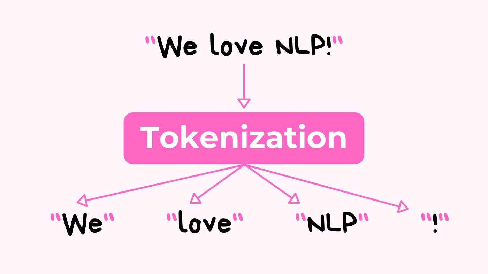
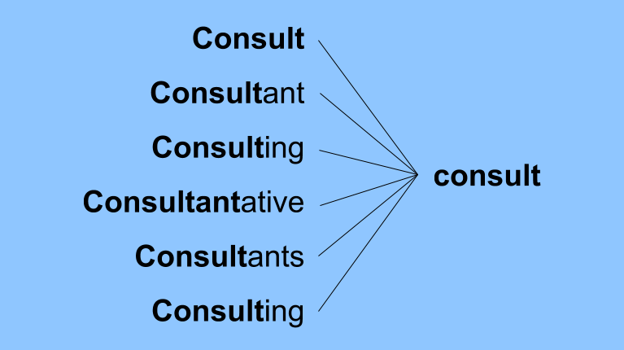

Complete Chatbot Pipeline
- Tokenization
- Stemming
- Bag of Words
- Training Data
- Dataset Class in PyTorch
- Save the Model
- Creating a Chat Response
- Integrating Model to a Website
- Deployment of Application in Cloud
Natural Language Processing Pipeline
The text the user provide to a chatbot have a go through an NLP pipeline first to make it much for meaningful.
We will be using NLTK (Natural Language Toolkit) to achieve this pipeline. Following are the major parts of the NLP Pipeline.
- Tokenization
- Stemming
- Bag of Words
Tokenization
Tokenization is essentially splitting a phrase, sentence, paragraph, or an entire text document into smaller units,
such as individual words or terms.
Each of these smaller units are called tokens (eg: Words, Puntuation, Characters, Numbers). We will be using Punkt as a Package with pre-trained tokenizer.

There are numerous uses of doing this. We can use this tokenized form to:
a. Count the number of words in the text.
b. Count the frequency of the word, that is, the number of times a particular word is present.
from nltk.tokenize import word_tokenize
text = "SpaceX’s mission is to enable humans to become a spacefaring civilization."
word_tokenize(text)
Output: ['SpaceX', '’', 's', 'mission', 'is', 'to', 'enable', 'humans',
'to', 'become', 'a', 'spacefaring', 'civilization', '.']
Stemming
Stemming is a natural language processing technique that lowers inflection in words to their root forms,
hence aiding in the preprocessing of text, words, and documents for text normalization.
Text Normalization is the process of converting a token into its base form. Best practise is giving lowered text input to stemmer.

from nltk.stem import PorterStemmer
stemmer = PorterStemmer()
words = ["organize", "organizes", "organizing"]
words = [stemmer.stem(w.lower()) for w in words]
-> ["organ", "organ", "organ"]
Intents Json
The intents.json file is the main part of our training. It Consist of dictionary keys like tag, patterns,
responses and values we setted for the keys. It can be modified based on the needs of our interest.
After Training when the model gets a response from the user we will be running
it through all words of json possible patterns and giving an appropriate random response from responses list in intents dictionary.
{
"intents":
[
{
"tag": "greeting",
"patterns": ["Hi", "How are you", "Is anyone there?", "Hello", Whatsup"],
"responses": ["Hey there :)", "Good to see you", "how can I help"]
}
]
}
So inorder to loop through all words we need a list of all words from the patterns as a list.
all_words = []
tags = []
xy = []
for intent in intents["intents"]:
tag = intent["tag"]
tags.append(tag)
for pattern in intent["patterns"]:
w = tokenize(pattern)
all_words.extend(w)
xy.append((w, tag))
Ignoring Some Words
ignore_words = ["?", ".", ",", "!", "/", "'s"]
all_words = [stemming(w) for w in all_words if w not in ignore_words]
Bag of Words
Bag-Of-Words is an algorithm that transforms the text into fixed-length vectors.
This is possible by counting the number of times the word is present in a document.

# Stemming the tokenized_sentence
tokenized_sentence = [stemming(w) for w in tokenized_sentence]
bag = np.zeros(len(all_words), dtype=np.float32)
for idx, w in enumerate(all_words):
if w in tokenized_sentence:
bag[idx] = 1.0
return bag
Training Data
X_train = []
y_train = []
for (pattern_sentence, tag) in xy:
bag = bag_of_words(pattern_sentence, all_words)
X_train.append(bag)
label = tags.index(tag)
y_train.append(label) # No need of OnehotEncoding, CrossEntropy Loss is used here.
X_train = np.array(X_train)
y_train = np.array(y_train)
Dataset Class in PyTorch
We cannot directly give the data we created to Pytorch.
It must inherits some features of a Dataset class in Pytorch. After creating the dataset
we also need to follow a workflow like calling the class, loading and much more like below.

class ChatDataset(Dataset):
def __init__(self):
self.n_samples = len(X_train)
self.x_data = X_train
self.y_data = y_train
# dataset[idx]
def __getitem__(self, index):
return self.x_data[index], self.y_data[index]
def __len__(self):
return self.n_samples
# Number of samples in the training data.
batch_size = 8
dataset = ChatDataset()
# if num_workers=2 shows error, then use 0 in windows.
# We have at most 2 workers simultaneously putting data into RAM (Multi-Processing/Multi-Threading)
train_loader = DataLoader(dataset=dataset, batch_size=batch_size, shuffle=True, num_workers=0)
Feedforward Neural Network
PyTorch provides the torch.nn module to help us in creating and training of the neural network.
We are creating a class which inherits from nn.Module having a Feedforward Neural Network with 2 hidden layers.
A feedforward neural network is a type of artificial neural network in which nodes’ connections do not form a loop.
Often referred to as a multi-layered network of neurons, feedforward neural networks are so named because all information
flows in a forward manner only.
The purpose of feedforward neural networks is to approximate functions.
There is a classifier using the formula y = f(x).
This assigns the value of input x to the category y.
The feedfоrwаrd netwоrk will mар y = f (x, θ).It then memorizes the value of θ that most closely approximates the function.
A Feedforward Neural Network’s Layers
- Layer of input
It contains the neurons that receive input. The data is subsequently passed on to the next tier.
The input layer’s total number of neurons is equal to the number of variables in the dataset.
- Hidden layer
This is the intermediate layer, which is concealed between the input and output layers.
This layer has a large number of neurons that perform alterations on the inputs.
They then communicate with the output layer.
- Output layer
It is the last layer and is depending on the model’s construction. Additionally,
the output layer is the expected feature, as you are aware of the desired outcome.

In our Neural Net, Bag of Words is taken as input. Input Size is the Number of Patterns. Then there is 2 Hidden Layer.
The Output Size is Number of Classes. We apply Softmax and apply probability for each class.
Hidden Size can be changed, but Input Output Size is kept constant. Activation function ReLu (Rectified Linear Unit -
It is a piecewise linear function that will output the input directly if it is positive, otherwise, it will output zero.)
is used in between the layers.
CrossEntropyLoss take care of the activation and softmax.
import torch.nn as nn
class NeuralNet(nn.Module):
def __init__(self, input_size, hidden_size, num_classes):
super(NeuralNet, self).__init__()
self.l1 = nn.Linear(input_size, hidden_size)
self.l2 = nn.Linear(hidden_size, hidden_size)
self.l3 = nn.Linear(hidden_size, num_classes)
self.relu = nn.ReLU()
def forward(self, x):
out = self.l1(x)
out = self.relu(out)
out = self.l2(out)
out = self.relu(out)
out = self.l3(out)
# No Activation and Softmax, Since we apply CrossEntropyLoss this gets already applied.
return out
input_size = len(X_train[0]) # Or len(all_words)
hidden_size = 8
ouput_size = len(tags)
device = torch.device("cuda" if torch.cuda.is_available() else "cpu")
model = NeuralNet(input_size=input_size,
hidden_size=hidden_size,
num_classes=ouput_size).to(device)
Learning Rate is an important hyperparameter in Gradient Descent.
Gradient descent (GD) is an iterative first-order optimisation algorithm used to find a local minimum/maximum
of a given function. This method is commonly used in machine learning (ML) and deep learning(DL)
to minimise a cost/loss function (e.g. in a linear regression).
Its value determines how fast the Neural Network would converge to minima.
Usually, we choose a learning rate and depending on the results change its value to get the optimal value for LR.
If the learning rate is too low for the Neural Network the process of convergence would be very slow and if it’s too
high the converging would be fast but there is a chance that the loss might overshoot.
So we usually tune our parameters to find the best value for the learning rate.
# loss and optimizer
learning_rate = 0.001
# Epochs - Number of complete passes through the training dataset.
num_epochs = 1000
criterion = nn.CrossEntropyLoss()
optimizer = torch.optim.Adam(model.parameters(), lr=learning_rate)
for epoch in range(num_epochs):
for (words, labels) in train_loader:
words = words.to(device)
labels = labels.to(device=device, dtype=torch.int64)
# Forward pass
outputs = model(words)
# if y would be one-hot, we must apply
# labels = torch.max(labels, 1)[1]
loss = criterion(outputs, labels)
# Backward and optimizer step
optimizer.zero_grad()
loss.backward()
optimizer.step()
if (epoch + 1) % 100 == 0:
print(f"epoch {epoch + 1}/{num_epochs}, loss={loss.item():.4f}")
print(f"final loss, loss = {loss.item():.4f}")
Save the Model
After the model creation, we need to save and store the model for later model loading tasks.
data = {
"model_state": model.state_dict(),
"input_size": input_size,
"output_size": ouput_size,
"hidden_size": hidden_size,
"all_words": all_words,
"tags": tags
}
filename = "data.pth"
torch.save(data, filename)
Creating a Chat Response
Now we need a function to load our model and make a response function for our input message.
filename = "data.pth"
data = torch.load(filename)
input_size = data["input_size"]
hidden_size = data["hidden_size"]
output_size = data["output_size"]
all_words = data["all_words"]
tags = data["tags"]
model_state = data["model_state"]
model = NeuralNet(input_size=input_size, hidden_size=hidden_size, num_classes=output_size).to(device)
# Loading learned parameters
model.load_state_dict(model_state)
# Setting to evaluation mode
model.eval()
Now creating a specific stand alone get response function to get back a response for the user's input message.
The softmax function is a function that turns a vector of K real values into a vector of K real values that sum to 1.
The input values can be positive, negative, zero, or greater than one, but the softmax transforms them into values
between 0 and 1, so that they can be interpreted as probabilities. If one of the inputs is small or negative,
the softmax turns it into a small probability, and if an input is large, then it turns it into a large probability,
but it will always remain between 0 and 1.
def get_response(msg):
sentence = tokenize(msg)
x = bag_of_words(sentence, all_words)
x = x.reshape(1, x.shape[0])
# Conerting to torch tensor.
x = torch.from_numpy(x).to(device)
output = model(x)
# Return max of the array vector from each row (dim=1)
_, predicted = torch.max(output, dim=1)
tag = tags[predicted.item()]
probs = torch.softmax(output, dim=1)
prob = probs[0][predicted.item()]
if prob.item() > 0.75:
for intent in intents["intents"]:
if tag == intent["tag"]:
return random.choice(intent['responses'])
else:
return "I do not understand..."
Integrate the Model to Website
- Flask for Back-end
- HTML, CSS & Javascript for Front-end
To integrate a flask web app with the model, we usually follow the similar deployment method.
We will store the response to the request in /predict page, and will render that in the Javascript file.
from flask import Flask, render_template, request, jsonify
from chat import get_response
app = Flask(__name__)
@app.get("/")
def index_get():
return render_template("base.html")
@app.post("/predict")
def predict():
text = request.get_json().get("message")
# Check if text is valid
response = get_response(text)
message = {"answer": response}
return jsonify(message)
if __name__ == "__main__":
app.run(debug=True)
Since I don't have good experience with the Javascript,
I have used a pre build chatbot template and made little changes in the HTML, and CSS to make it a Chatbot for a Restaurant.
You can check the code of the template I have used, from the below Github link.
The main change we need to look at the returning of response from the javascript part is listed below.
fetch('http://127.0.0.1:5000/predict', {
method: 'POST',
body: JSON.stringify({ message: text1 }),
mode: 'cors',
headers: {
'Content-Type': 'application/json'
},
})
So in this way we can set the front-end and back-end to make an interactive website to integrate with our chatbot.
Deployment to Cloud
After this we can deploy the model to a cloud platform by providing the required files mentioned below.
Here I am using Heroku as a cloud platform, since it provides free hosting service.
- requirements.txt
In Python requirement.txt file is a type of file that usually stores information about all the libraries, modules, and
packages in itself that are used while developing a particular project. It also stores all files and packages on which that project is dependent or
requires to run. Typically this file "requirement.txt" is stored (or resides) in the root directory of your projects.
It helps us in several ways, even when we revisit our project in the future, as it solves almost all compatibility issues.
If you ever work on any Python project or developed any project, you surely know that we usually require several numbers of packages.
However, while developing a project, we generally used a particular version of packages. Later on, the package manager or maintainer may make some changes,
and these modifications can easily break your entire application. Therefore, it is too much work to keep track of every modification in the packages.
Specifically, where the project is way too big, it is essential to keep track of each package we are using to avoid unexpected surprises.
- runtime.txt
It's mainly for web application hosts to detect the runtime of your application/program so that
when you spin up your app in those services (i.e. IBM cloud in your post, Heroku, Docker, etc),
they spin up the correct environment to run your code. Runtime. It contains the version of python which we used to develope our project.
It is useful because it is possible that someone might be using python 2.0 whereas someone else might be using python 3
for running/developing the same project .
- WSGI
The Web Server Gateway Interface (or “WSGI” for short) is a standard interface between web servers and Python web application frameworks.
By standardizing behavior and communication between web servers and Python web frameworks,
WSGI makes it possible to write portable Python web code that can be deployed in any WSGI-compliant web server. I have used Waitress as WSGI.
Waitress is a pure-python WSGI server that claims “very acceptable performance”.
It does offer some nice functionality that Gunicorn doesn’t have (e.g. HTTP request buffering).
- nltk.txt
It is used to store information about the pre build tokenizer in NLTK that is used in the project. Here I have used punkt.
- Procfile
Procfile is a file that specifies the commands that are executed by an Heroku app on startup.
While it is not necessary to include a Procfile for Heroku deployment,
a Procfile allows for more startup configuration and the definition of multiple processes that run separate dynos.
- .gitignore
.gitignore file - ensuring that any files that match the patterns in the file are not considered for addition to a repository.
You may already have a .gitignore in the root of your application folder, which matches certain patterns -
yet still want to configure it to ignore additional folders.
CHATBOT IN BUSINESS ?
After building the chatbot I thought, How it could be used to help customers of the business.
It is clear that lots of companies are using the chatbot on their websites. But does it really worth the money
replacing a customer service offered by humans. Let's look at some use cases:
- 24/7 Availability
Customers don’t need to wait for the next available operator when chatbots are part of the communication strategy.
- Consistency in Answers
The use of chatbots can help businesses maintain a great level of consistency in answers and improve customer experience with the brand.
- Multilingual
Your business can program the sales bot to answer queries in the language of customers and expand the reach to new markets or territories.
- Omni-channel
AI-powered bots come with omni-channel messaging support features which help customers communicate with businesses through various channels such as websites, Facebook, etc.
- Instant Response
Chatbots can handle the queries of thousands of customers instantly and helps to improve the average response time.
- Applicable to Multiple Industries
Instead of a human it can be trained to use in any industry like Healthcare, Banking & Financial Sector, Education, HR,
Retail and Travel & Tourism easily with a short period of time without much cost.
- Endless patience
While dealing with the customers, humans sometimes lose their patience, bots do not.
- Personalization
They can store and leverage your interaction history
with them to provide more personalized interaction. In customer service, for instance, they could remember
the customer’s name and their ticket number.
- Convenient for introverts
Not everyone relishes constant human interactions. Chatbots give introverted users the possibility to have their
issues addressed and their questions answered without necessarily talking to a live agent.
Even though chatbot has some problems when it comes to Maintenance, Creation, Question Handling and Technical for a non tech
person. Still the pros easily overcome these issues.
So let's think about installing them.